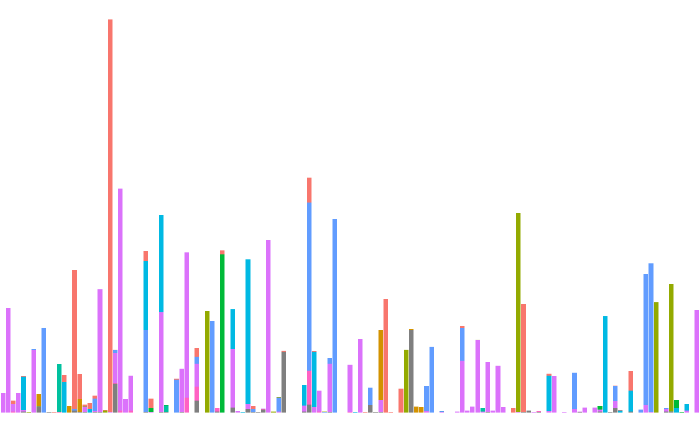
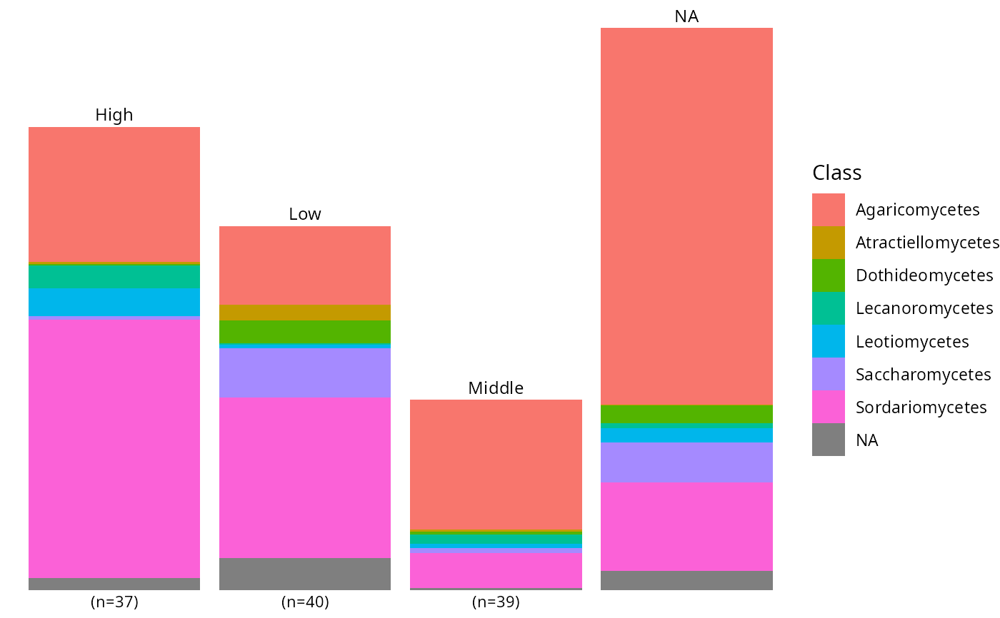
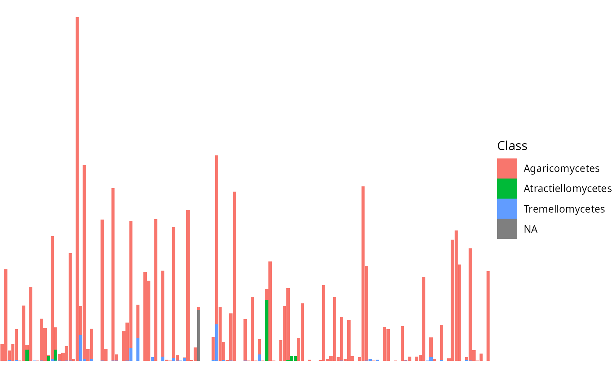
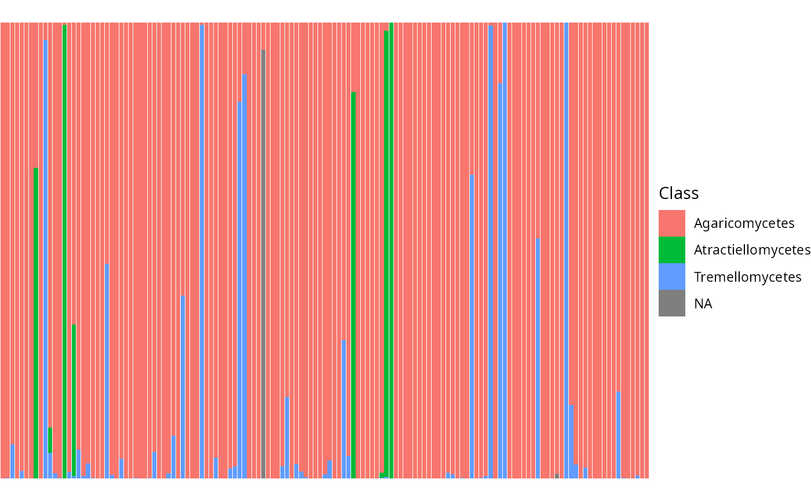
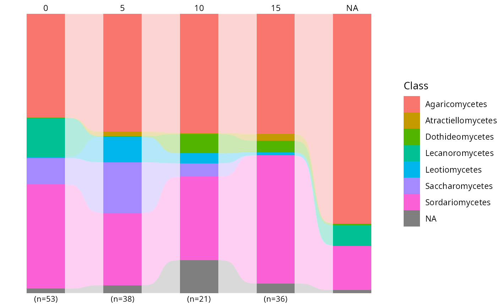
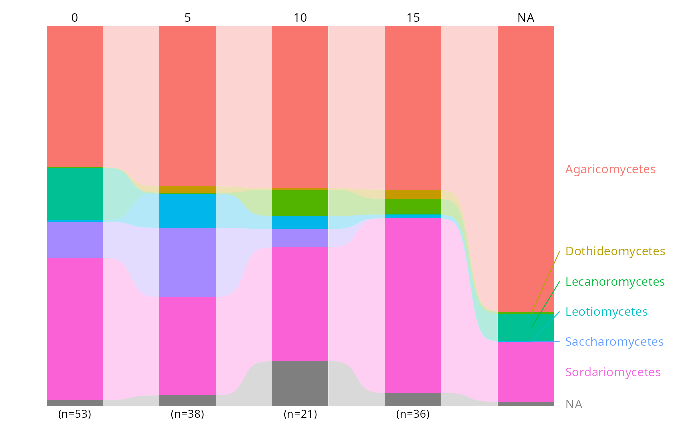
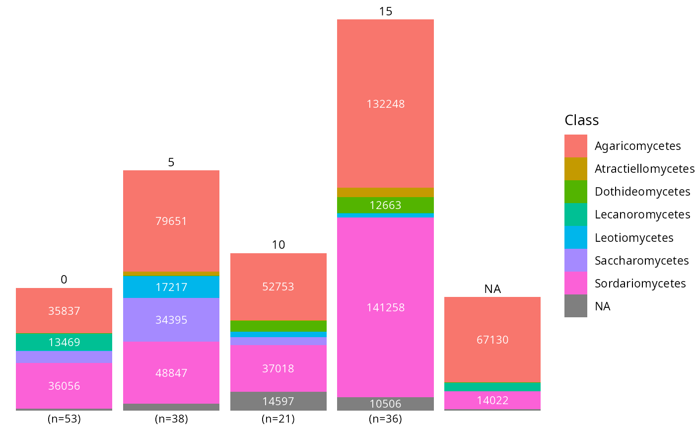
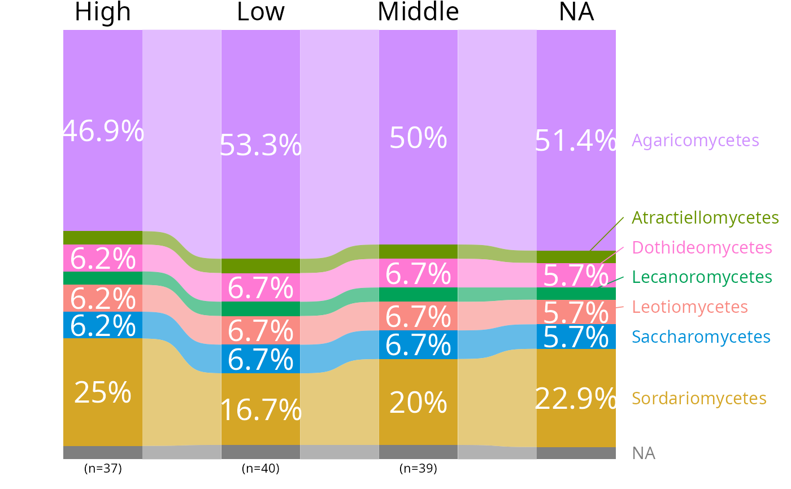
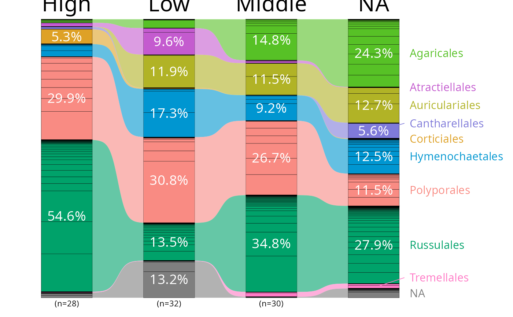

Plot the distribution of sequences or ASV in one taxonomic levels
Source:R/plot_functions.R
tax_bar_pq.Rd
Graphical representation of distribution of taxonomy, optionnaly across a factor.
Usage
tax_bar_pq(
physeq,
fact = "Sample",
taxa = "Order",
percent_bar = FALSE,
nb_seq = TRUE,
add_ribbon = FALSE,
ribbon_alpha = 0.3,
label_taxa = FALSE,
void_theme = TRUE,
show_values = FALSE,
minimum_value_to_show = 0,
label_size = 3.2,
value_size = 3,
top_label_size = 3.2,
bar_width = NULL,
bar_internal_color = NA,
linewidth_bar_internal = ifelse(is.na(bar_internal_color), 0, 0.5),
show_n_samples = TRUE,
n_sample_text_size = 3
)Arguments
- physeq
(required) a
phyloseq-classobject obtained using thephyloseqpackage.- fact
Name of the factor to cluster samples by modalities. Need to be in
physeq@sam_data.- taxa
(default: 'Order') Name of the taxonomic rank of interest
- percent_bar
(default FALSE) If TRUE, the stacked bar fill all the space between 0 and 1. It just set position = "fill" in the
ggplot2::geom_bar()function- nb_seq
(logical; default TRUE) If set to FALSE, only the number of ASV is count. Concretely, physeq otu_table is transformed in a binary otu_table (each value different from zero is set to one)
- add_ribbon
(logical; default FALSE) If TRUE and
factis not "Sample", add curved ribbons connecting matching taxa between adjacent bars. Only meaningful whenfacthas more than one level.- ribbon_alpha
(numeric; default 0.3) Transparency of the ribbons.
- label_taxa
(logical; default FALSE) If TRUE, replace the legend with direct labels on the right side of the last bar. Taxa that appear in the first bar but are absent from the last bar are additionally labelled on the left side of the first bar. Segments are drawn to resolve overlapping labels.
- void_theme
(logical; default TRUE) If TRUE, use
ggplot2::theme_void()whenlabel_taxais TRUE.- show_values
(logical; default FALSE) If TRUE, display abundance values (or percentages when
percent_bar = TRUE) inside bar segments that exceedminimum_value_to_show.- minimum_value_to_show
(numeric; default 0) When
show_values = TRUE, only segments with a value strictly above this threshold get a label.- label_size
(numeric; default 3.2) Font size (in ggplot2 mm units) for taxa labels when
label_taxa = TRUE.- value_size
(numeric; default 3) Font size (in ggplot2 mm units) for value labels when
show_values = TRUE.- top_label_size
(numeric; default 3.2) Font size (in ggplot2 mm units) for the top group labels when
factis not "Sample".- bar_width
(numeric; default NULL set 0.9 if
add_ribbon = FALSE, 0.5 ifadd_ribbon = TRUEandfact != "Sample", and 0.6 if fact is only a one-level factor). Width of the bars. Set to 0 to have no visible bars and only ribbons.- bar_internal_color
(default NA) Color of bar borders. Use
NA(default) to remove borders, which avoids thin white lines in PDF output. Set to e.g."black"or"grey30"for visible borders.- linewidth_bar_internal
(default 0 if
bar_internal_colorisNA, otherwise 0.5) Line width of bar borders.- show_n_samples
(logical; default
TRUE) IfTRUE, the number of samples per group is displayed below each bar as"(n=X)".- n_sample_text_size
(numeric; default
3) Font size (in ggplot2 mm units) for the(n=X)label displayed below each bar whenshow_n_samples = TRUE.
Value
A ggplot2 plot with bar representing the
number of sequence en each taxonomic groups
Examples
data_fungi_ab <- subset_taxa_pq(data_fungi,
taxa_sums(data_fungi) > 10000)
#> Cleaning suppress 0 taxa ( ) and 15 sample(s) ( BE9-006-B_S27_MERGED.fastq.gz / C21-NV1-M_S64_MERGED.fastq.gz / DJ2-008-B_S87_MERGED.fastq.gz / DY5-004-H_S97_MERGED.fastq.gz / DY5-004-M_S98_MERGED.fastq.gz / E9-009-B_S100_MERGED.fastq.gz / E9-009-H_S101_MERGED.fastq.gz / N22-001-B_S129_MERGED.fastq.gz / O20-X-B_S139_MERGED.fastq.gz / O21-007-M_S144_MERGED.fastq.gz / R28-008-H_S159_MERGED.fastq.gz / R28-008-M_S160_MERGED.fastq.gz / W26-001-M_S167_MERGED.fastq.gz / Y29-007-H_S182_MERGED.fastq.gz / Y29-007-M_S183_MERGED.fastq.gz ).
#> Number of non-matching ASV 0
#> Number of matching ASV 1420
#> Number of filtered-out ASV 1385
#> Number of kept ASV 35
#> Number of kept samples 170
tax_bar_pq(data_fungi_ab) + theme(legend.position = "none")

tax_bar_pq(data_fungi_ab, taxa = "Class", fact = "Height",
show_n_samples = TRUE)

# \donttest{
tax_bar_pq(data_fungi_ab, taxa = "Class")

tax_bar_pq(data_fungi_ab, taxa = "Class", percent_bar = TRUE)

tax_bar_pq(data_fungi_ab, taxa = "Class", fact = "Time")
tax_bar_pq(data_fungi_ab,
taxa = "Class", fact = "Time",
percent_bar = TRUE, add_ribbon = TRUE
)

tax_bar_pq(data_fungi_ab,
taxa = "Class", fact = "Time",
percent_bar = TRUE, add_ribbon = TRUE, label_taxa = TRUE
)
#> Warning: 1 taxon/taxa only appear in intermediate levels and will not be labelled: Atractiellomycetes. Consider using label_taxa = FALSE.

tax_bar_pq(data_fungi_ab,
taxa = "Class", fact = "Time",
show_values = TRUE, minimum_value_to_show = 10000
)

tax_bar_pq(data_fungi_ab, fact = "Height", taxa = "Class",
nb_seq = FALSE, percent_bar = TRUE, label_taxa = TRUE,
add_ribbon = TRUE, value_size=7, ribbon_alpha = .6,
show_values=TRUE, label_size = 4, top_label_size = 6,
minimum_value_to_show=0.05) |>
reorder_distinct_colors(alternate_lightness=TRUE)

tax_bar_pq(data_fungi_mini, fact = "Height", taxa = "Order",
nb_seq = TRUE, percent_bar = TRUE, label_taxa = TRUE,
add_ribbon = TRUE, value_size=5,
ribbon_alpha = .6, show_values=TRUE,
label_size = 4, top_label_size = 8,
minimum_value_to_show=0.05, bar_width = NULL,
linewidth_bar_internal = 0.1, bar_internal_color="black") |>
reorder_distinct_colors(alternate_lightness=TRUE)

# }